Pedestrian Attribute Recognition 是我在深醒做的第二个项目。本篇笔记初稿写于接到任务后一周多，记录了些ReID和属性识别的paper以及自己的一些思考。后续跑了几个demo和数据，结合测试效果和新的理解对笔记进行了修改和增加。
正巧赶上刚刚搭建了自己的第一个website，又终于有时间排下版，就迫不及待地开心地发上来…
我也不知道在开心什么。
行人属性识别领域现状
仅针对行人属性识别的资料较少，几乎没有关于行人属性识别研究的综述性文章。目前较新的针对行人属性识别的研究多集中在与其他相关领域结合的研究，如 HydraPlus-Net: Attentive Deep Features for Pedestrian Analysis 将行人再识别与行人属性识别结合在一起进行研究，并提出了目前最大的也是最新的行人属性识别数据集：PA-100k，包括了100000个行人。又如 Adaptively Weighted Multi-task Deep Network for Person Attribute Classification 中将行人属性和人脸属性结合到一起，并在Market1501和Duke数据集上作了行人属性识别的相关工作。
关于行人属性的开源代码资源，我主要就 Weakly-supervised Learning of Mid-level Features for Pedestrian Attribute Recognition and Localization 的开源进行了相关的测试和拓展，利用RAP数据集以及PA-100K数据集进行训练和测试。另外 Adaptively Weighted Multi-task Deep Network for Person Attribute Classification 提供了不完整且仅针对人脸属性的代码，并且没有相应的文档说明。
数据集方面比较著名的是RAP数据集和PETA数据集。另外，17年公开的最新最大的数据集PA-100K克服了前两个数据集中一些数据采集和分配方面的缺点，但是只进行了26个属性的标注。
行人属性识别面临的主要挑战
行人属性识别属于多标签分类问题，但因为其众多属性分处不同的特征层次以及不同的大小规模，对属性的识别效果，尤其是在监控环境下基于低质量图像的对属性的识别效果一直不甚理想，目前最state-of-the-art的算法也只能在mA上达到80%左右的准确率。具体地，行人属性识别主要存在以下几个问题：
- 针对细粒度的属性，如眼镜，配饰，传统的直接提取整幅图像特征的方法无法很好的识别这些属性。行人的属性各不相同，有的属性需要浅层特征，而有的属性需要高层特征，有的属性需要局部特征，有的属性需要全局特征才能识别。那么如何提取一个能够包括所有以上针对不同属性的特征就成了至关重要的问题。
- 每个属性的收敛速度不同导致不同的属性会在训练过程中影响到识别其他属性的效果。（通过设置损失函数权重解决）
- 同一个属性在不同的样本中所处位置可能不尽相同，如人们背包的位置多种多样，那么针对这种属性我们应该怎样消除不同样本间属性位置不同带来的影响。（通过中层特征对属性进行粗定位是一种缓解方法）
- 如果不用人工框图而是利用行人检测器检测出来的行人框，行人所处的位置可能并不在图片中央，行人所占的比例可能也不是图片中的主体，这会影响到属性识别的效果。
数据集
RAP
RAP是2016年提出的针对行人属性识别的数据集，可以说是截至2017年底最大最权威的行人属性识别数据集。目前，基本上所有的state-of-the-art的算法都会在RAP数据集上进行测试并作为衡量算法效果的第一指标。此外，RAP数据集还针对行人拍摄位置进行了不同viewpoint的分类和不同行人遮挡部位的分类，并在其论文中详细介绍了不同拍摄视角和不同遮挡部位对行人属性识别带来的影响。RAP数据集需要通过机构邮箱申请.
RAP数据集包含41585张行人样本，分为69个二分类属性和3个多分类属性，分辨率范围：36 * 92 to 344 * 554.
其样本的viewpoint和occlusion分布如下所示：
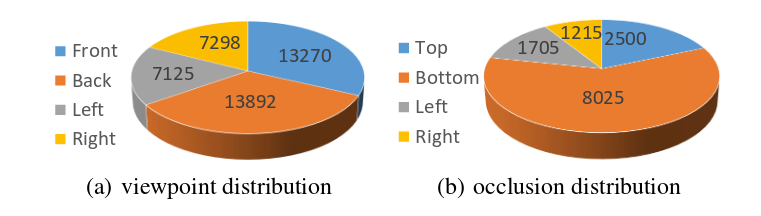
其属性标签如下所示：
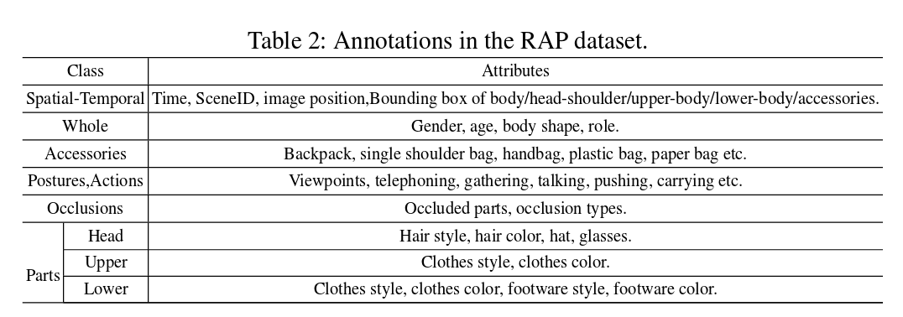
对不同身体部分的标注和一些属性标注示例如下：
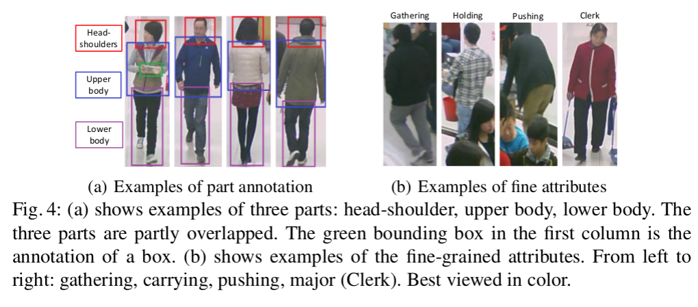
PETA
PETA是2014年发布的数据集，是第一个针对行人属性识别的上万规模的数据集。其收集结合了10个行人再识别小数据集，共19000张行人样本，包括8705个行人。每个样本分为61个二分类属性和4个多分类属性。分辨率范围：17 * 39 to 169 * 365.
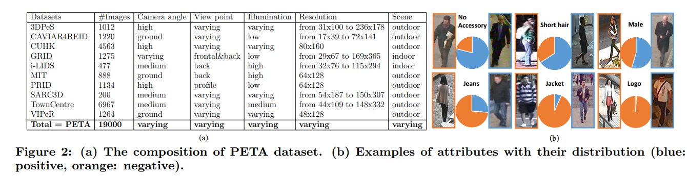
目前的工作都是从PETA中选出了35个属性进行识别，具体如下：
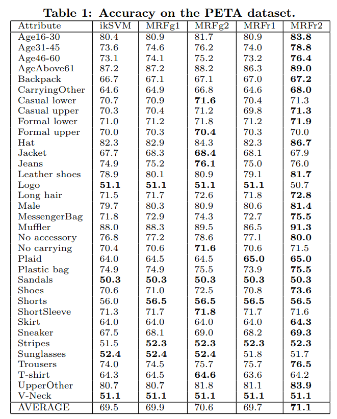
PETA有一个问题是，其关于属性的标注是基于行人ID标注的。也就是说，只要是同一个行人，不管他的某些属性在某张图片里是否是可见的，他的标注都是一样的。
PA-100K
PA-100K是2017年底发布的最新的，最大的，针对行人属性识别的数据集，包括10万个行人样本，每个样本分26个属性。分辨率范围：50 * 100 to 758 * 454.
评价指标
目前衡量行人属性识别效果的评价指标主要有两个，mA和example-based evaluation。
mA
mA分别计算每个属性正样本和负样本分对的比例，再二者平均作为这一个属性的准确度，接着再对所有属性取平均作为最后的mA指标。
具体计算如下所示：
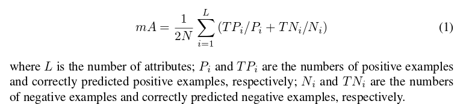
example-based evaluation
这组评价指标针对每个样本进行评价，通过计算每个样本分对属性和分错属性的关系计算一组指标。
具体计算如下所示：
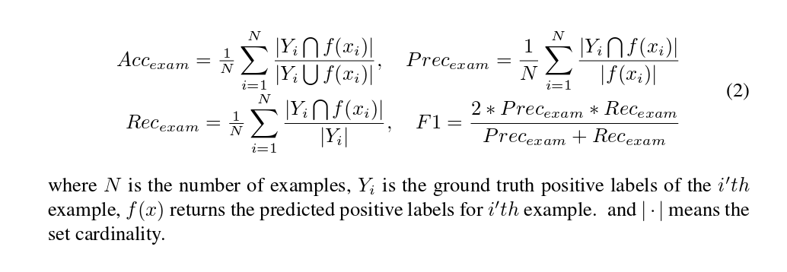
主流方法及未来方向
最早的行人属性识别通过人工提取特征，并针对每个不同的属性分别训练分类器。随着CNN的发展，人们开始尝试把所有属性置于同一个网络进行多任务训练，并发现多任务训练能够带来更好的效果。目前行人属性识别的基本方法是将整个图片扔进同一个CNN网络，并输出多个代表属性的标签进行分类。
基于这个最基本的方法，目前最新的工作主要集中在如何对不同粒度、不同规模的属性进行识别，如何通过提取场景中的上下文信息辅助属性的识别，以及如何提取不同属性间的相关性信息。
一般地，不同粒度属性的提取通过建立不同网络层次的分支分别进行提取，再将不同分支提取的特征进行拼接作为最终特征。上下文信息的提取通过建立LSTM网络结构，使得上下文能够传入到后续提取特征的过程当中。不同属性间相关性信息通过多属性联合训练或利用LSTM网络保存上一个属性的识别信息进行提取。
关于行人属性识别的未来发展趋势，因为考虑到目前这个领域基于CNN的方法也只是刚刚起步，各方面资料和数据都不算完备，还有许多需要改进的地方。这里我只针对我认为的几个比较重要的发展方向进行猜想：
- 在识别过程中考虑不同viewpoint和不同遮挡对属性识别的影响，这需要在训练过程中就加入以上两个方面的元素，并设计新的训练逻辑来利用带有不同viewpoint标注的数据。
- 设计更好的网络结构全方位的提取不同粒度不同规模的属性特征。我们知道不同的属性需要提取不同层次的特征，目前的方法主要通过设置多个分支来解决这个问题，但是我感觉针对分支的设置以及注意力机制的结合，这个方法还可以再继续优化。
- 怎么结合检测进行行人属性识别。目前属性识别的研究几乎都是针对检测好的行人框，但是真实场景中需要检测和属性识别一体化的系统。
- 针对不同的场景，挑选合适的属性。不同的场景对属性的需求也不同。考虑到不同的属性由于其不同粒度和规模的特征，会对模型产生很大的影响，所以我认为针对实际场景我们应该挑选需要的属性，分析属性信息属于的特征层次并由属性驱动我们设计针对性的网络结构。
几篇关于行人属性识别的工作
HydraPlus-Net: Attentive Deep Features for Pedestrian Analysis
港中文和商汤的一篇可以同时解决属性识别和行人再识别的工作。首先总结了目前解决属性识别的方法基本都是提取行人的全局特征，但是因为不同的属性所需求的特征大小都不相同，如判断是否打电话需要肩膀部位的特征，但是判断性别则需要全局的特征。作者提出的方法是通过提取不同位置的特征，即从局部到整体多个角度进行提取，来解决属性识别的问题。同时，还需要从不同的特征层次进行提取，如衣服条纹用浅层特征，但是头发长度则需要相对高层的语意特征。
网络结构如下所示：
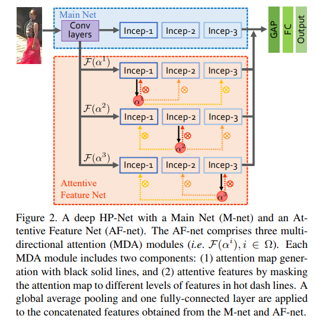
一张图片首先在M-net的3个block产生3个输出，这三个输出再分别用一层1 * 1 * L的卷积层调整到channel为L，然用基于元素与一个矩阵相乘，分别输入到AF-net中的3个block。M-net输出的3种不同的featuremap决定了feature level，而channel决定了location。
训练过程是分阶段训练. 首先训练M-net，并复制其参数到3条AF-net分支上，再分别训练3条AF-net分支。之后固定前面的网络，训练池化层和全连接层。
算法效果如下：
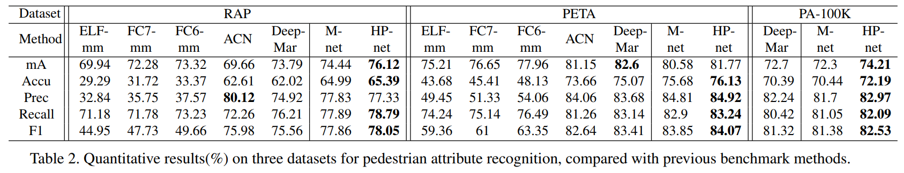
Adaptively Weighted Multi-task Deep Network for Person Attribute Classification
本篇工作提出了把多个属性联合训练能够有效提升模型表现，因为这样可以提取属性之间的相关性。但是这样做有一个问题是不同属性之间的收敛速度不一样。以往的工作不同属性之间对loss占的权重是固定的，这样就会导致如果一个属性已经收敛了，但是另一个属性没收敛的话，那么继续训练就会影响已经收敛的属性。本篇提出的解决方法是，通过动态和自适应的调整不同属性所占的权重，来解决这个问题。论文提出了一种新的框架和训练算法实现这个方法。
网络结构如下所示：
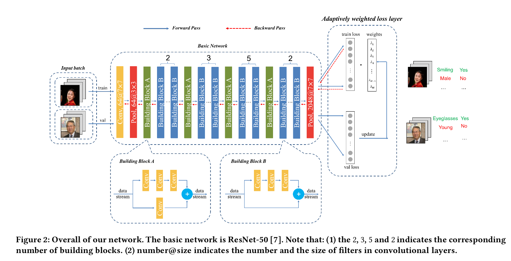
此外，本篇工作测试的数据集是人脸属性的数据集,以及market1501和duke针对行人属性的数据集，没有在常见的RAP数据集上进行测试。
算法效果如下：
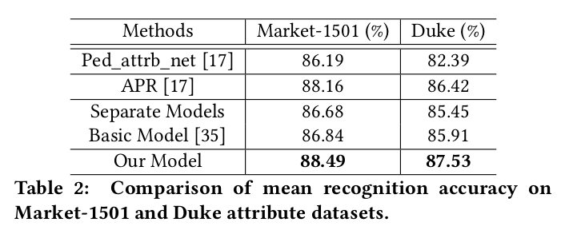
考虑到本篇工作的测试主要基于人脸属性数据集和冷门的行人属性数据集，所以测试结果可参考性不大。这里列出这篇工作主要是因为其提出的动态调整loss权重的训练算法感觉可以用在其他地方，辅助提升属性识别效果。
Attribute Recognition by Joint Recurrent Learning of Context and Correlation
主要思路有两个，一是提取不同属性之间的相关性，如女性和裙子之间的相关性。二是提取行人的上下文，即同一个场景的人很有可能有类似的属性，如都穿很厚的衣服或戴太阳镜。
算法网络结构如下：
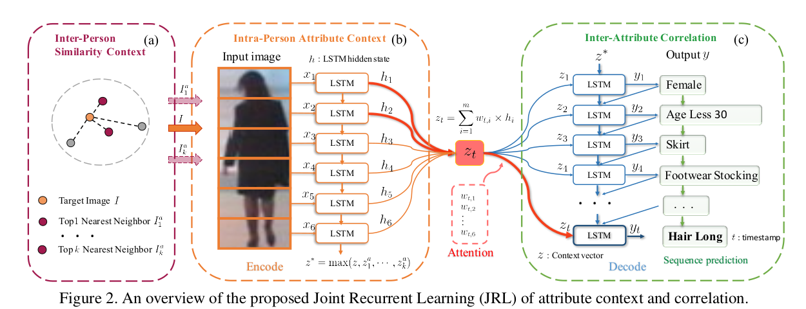
Intra-Person Attribute Context 结构针对一张行人框，把这个行人框垂直分为6个部分，再用6个LSTM单元对每个部分提取特征，最后一个单元输出的状态就可以看作是这种图片综合的一个特征总结。这样的提取方式可以提取身体不同部分的空间依赖性以及局部拓扑关系的上下文信息。
Inter-Person Similarity Context 结构针对一张输入的image I，搜寻相似度最高的k个训练image（训练过程），然后用和上面相同的方法输出每个image的综合特征z，并将所有选取的图片和输入的图片置于一起，每个特征元素取最大值，作为行人间的上下文特征。
每个框首先经过基础CNN(Alexnet)，将整体的featuremap垂直分成m个区域分别进行池化，将m个区域的池化输出拼接在一起输入全连接层，输出向量用L2 distance搜索训练数据集中相似度最高的k个image。
Inter-Attribute Correlation 结构输入行人间上下文特征z* 和每一个图片的上下文信息z。此外，根据一种图片不同部分对不同属性识别的贡献不同，加入注意力机制，为每个属性分配一个w参数，选取如何提取6个部分的比例。(实际上个人感觉就是一个输出为属性个数的向量的全连接层). z* 作为第一个lstm的初始状态，z相当于每个lstm的输入x。有多少属性就有多少个lstm，每个lstm输出y对应一个属性的标签，且这个y被输入到后续的lstm当中，作用于属性间相关性的提取。
最后属性排列的顺序有很多种排法，如出现频率优先，随机排序等等。给一张test image，根据设定的10种排法产生10个结果，然后投票少数服从多数生成最终结果。
属性预测的顺序是10个顺序的集成。对每个属性顺序，训练一个特定的JRL。为防止噪声由RNN传播到CNN，两者独立训练。majority voting获得最终的结果。
算法效果如下：
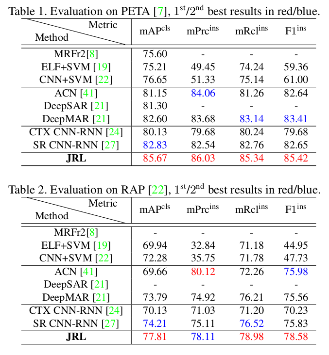
一个问题：对属性的表示不是采用one-hot编码，而是采用word embedding的方法。我的理解：每个属性的名字通过word embedding生成一个向量，通过计算预测向量和属性向量的相似度表示该属性的概率？
A Richly Annotated Dataset for Pedestrian Attribute Recognition
本篇工作提出了RAP数据集，并就不同视角，不同遮挡，不同身体部分，和属性间相关性对行人属性识别产生的影响进行了详细和系统的分析。
首先将数据分成有遮挡和无遮挡两部分。
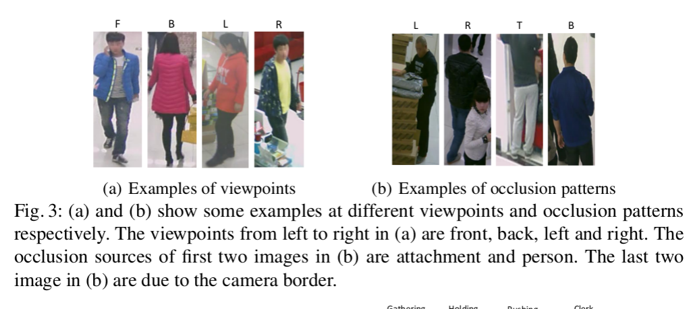
不同视角：这部分只选取无遮挡的部分进行分析。方法是首先用全部无遮挡的数据进行训练，然后测试部分把所有的测试数据分成正面，后面，左面，右面4个方位，去分别看这4部分对每个属性的识别准确度。结果表明，不同的viewpoint会影响到一些特定的属性，比如背包在后面的准确度最高，而是否持有物品在正面的准确度最高，袖子手臂的属性在侧面的准确度最高。
分析结果及其可视化:
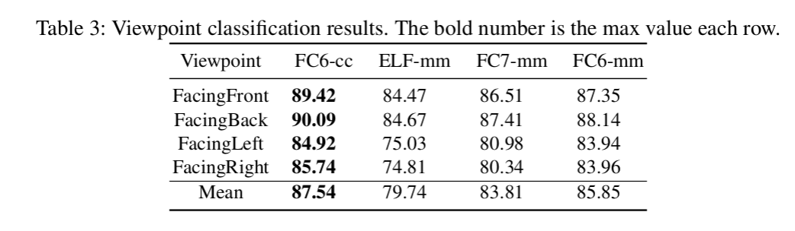
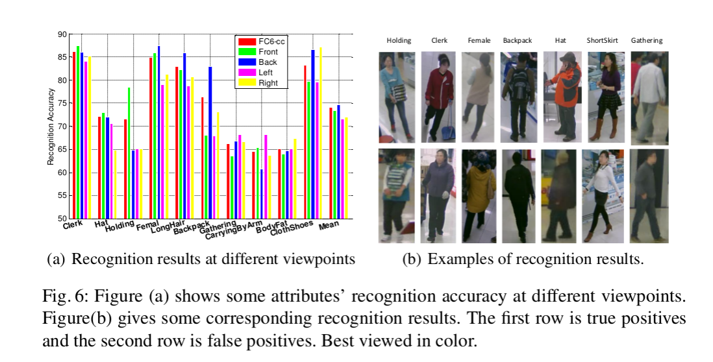
不同遮挡类型：用无遮挡的数据进行训练，然后有遮挡的数据，和无遮挡的数据分别进行测试。结果表明，有遮挡会导致测试效果明显降低。而且相对来说，局部属性比整体属性下降的多，这表明遮挡会尤其对局部的属性产生影响。
不同身体部分：用无遮挡数据进行训练，然后测试数据根据身体部分的标注分为不同的三个部分。结果表明，属于哪部分的属性在该部分上识别效果比属于其他部分的属性好，这是显而易见的。启发是，能不能首先对身体的三个部分进行检测，检测出位置后每部分再识别对应的属性?
结果可视化:
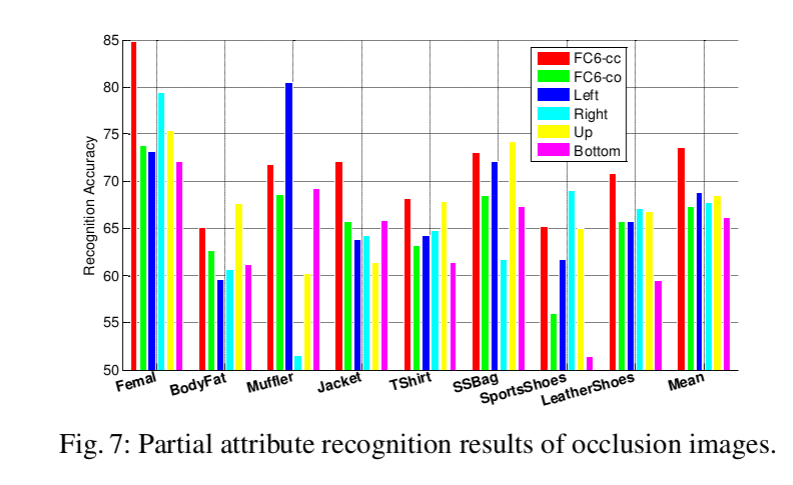
Weakly-supervised Learning of Mid-level Features for Pedestrian Attribute Recognition and Localization
Weakly-supervised Learning of Mid-level Features for Pedestrian Attribute Recognition and Localization 是找到的提供较完整代码的工作，其mA指标在RAP数据集中效果较好，但是基于example的一组指标却表现不甚理想。奇怪的是，我用其他方式进行数据预处理后，这组指标出现显著提升，怀疑先前通过简单的padding对每个图片补足到与所在batch同样size的预处理方式对最终效果产生了很大的影响。
本篇工作提出的想法是，如果行人属性每次的位置不统一的话，那么就难以通过直接输入全幅图像的方式识别属性。所以，论文提出了一种基于弱监督方式并且能够检测属性位置的网络，这样如果某个属性被检测出来出现在图像上，那么与该属性相关的其他属性就更可能被识别出来。比如如果检测网络检测到长发的话，那么女性这个相关的属性就更可能会被识别出来。这里体现了属性定位和属性相关性的思想。
本篇提出的架构与HydraPlus-Net中的架构有些相似，可以说是三条分支简化版本的HP-net。不同点在于分支后面的网络设计，这里采用了FSPP，一种特殊的池化层去定位属性的大概位置。
本篇工作主要针对现在存在的三个问题：
- 细粒度的属性会因为多层的卷积层和池化层的处理，被忽视掉。
- 同一个属性相对于人的相对位置可能不一致，比如一个包可能在肩上也可能在膝盖附近。
- 以往的训练都是用人工标注数据进行训练，默认行人在行人框的中心位置，相当于已经默认了行人的分布。但如果要用检测器进行自动化行人属性识别，则行人可能不在行人框的中心位置，行人的分布将是不统一的。
网络结构如下所示：
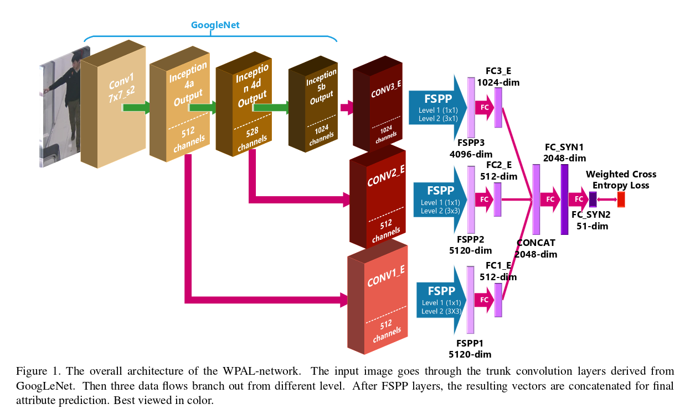
这里说的属性定位不是定位到具体的bounding box，而是通过金字塔最大池化的操作，保留每个部分最大的特征值，作为代表属性的特征。相当于属性位置在feature map上的定位。得到这些代表属性位置的特征后，通过后续的全连接层提取属性间的相关性，最终输出属性个数节点作为每个属性的分类器。
每个分支的最大池化操作在两个层面上进行池化。level1对整幅feature map进行最大池化，level2将feature map分为9个区域分别进行最大池化。（这里关于是否分层次进行最大池化，作者分别给出了两种方法对于属性识别和属性定位的效果，在两个任务上二者各有优劣）。
池化操作示意图如下所示：
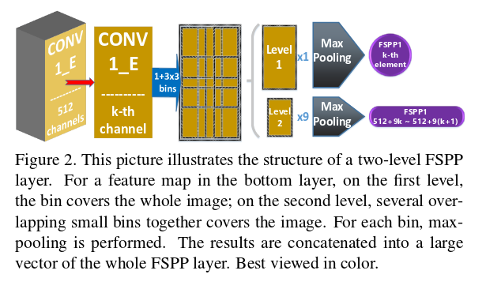
训练过程有两个目标。第一是训练出哪些属性要被detector检测出来作为中间特征。第二是这些检测出来的特征有怎样的相关性。这两个过程可以在熵损失函数的监督下同时训练。同时，作者对熵损失函数做了改进。因为原本多标签识别的损失函数，适用于每个标签的正负样本数量相当。但是在行人属性识别领域中，有的标签其正样本数量非常少，如果还用原来的损失函数会发生将该标签全都分到负类的情况。所以作者设计了一种带有权重的熵损失函数，权重代表每种标签训练样本中正样本的比例。
损失函数如下所示：
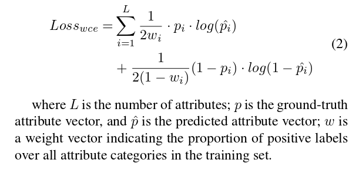
算法效果如下：
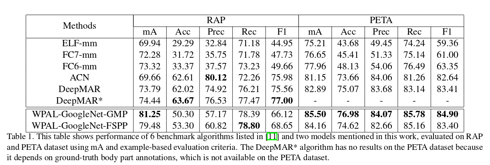
GMP代表仅采用全局的最大池化
Deep View-Sensitive Pedestrian Attribute Inference in an end-to-end Model
VesPA是目前行人属性识别领域效果最好的一篇文章，也是我们目前的首席算法。
论文利用了RAP数据中对viewpoint的标注，引出一条分支利用该标注训练viewpoint的分类器。在实际使用时，viewpoint分类器将首先对行人图片的viewpoint进行分类，接softmax层输出代表正、侧、后三个方位概率的值。代表3个方位的inception模块分别经池化和全连接层后对所有属性进行预测，预测结果将被赋予此前三个值作为权重代表3个方位的预测结果。最终的预测结果由3个分支的预测结果相加后接sigmoid层得出.
网络结构:
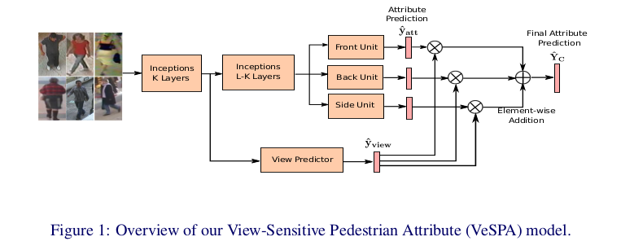
算法效果:
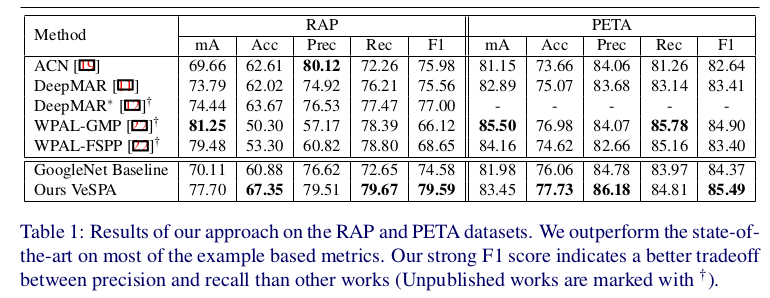
下阶段发展方向
基于目前对于行人属性识别领域的知识储备，我认为以后关于该领域的工作方向有以下几点，我将分别从数据方面和算法方面进行阐述。
数据方面
行人属性识别的数据存在很大的提升空间。事实上，我认为现今行人属性识别在科研界没有其他方向火热的原因，有一部分数据制约的因素。因为如今公开的数据集数据标注存在界限不明，标注错误的现象，目前无论如何设计算法，在基于这些数据的benchmark上也难以有较大的突破，这导致了属性识别领域的文章较难被收录，使部分专注于此的学者们失去驱动力。在今后的行人属性数据的标注中，可以考虑在标注过程中应去除界限不明的属性（这些属性会在训练中影响那些已经收敛好的属性），在标注之前统一所有标注员对某一属性的标注尺度。另外，在标注中考虑添加头部，上半身，下半身的bounding box位置标注，从而可以设计相应的算法利用这些位置信息，提升识别效果（VesPA利用RAP中viewpoint的辅助标注显著提升了效果，而头部，身体的位置也是十分重要的辅助信息）。
算法方面
目前我重新设计的网络结构中，除了少数网络有微弱的效果提升，其余网络均没有效果上的提升。分析原因除了数据上的制约外，我认为还有网络过于复杂导致训练收敛困难的问题。在我的探索中，我主要尝试把识别viewpoint的网络与多分支提取多粒度的思想和pyramid分part的思想进行结合，但是如何将这些思想完美的结合在一起是一个值得深入研究的问题。在实践中，我尝试了多种结合的方式，即使已经删除、简化部分复杂结构，并对各输出节点进行充分的降维，所形成的网络依然较为庞大。另外可能还存在训练参数的设置问题。因为我在这个领域资质尚浅，仅通过训练过程中loss变化分析训练阶段，调整学习率，步长等参数，在这些参数的设置上我很可能没有选取合适的参数组合得以进一步收敛模型。尽管如此，基于我粗浅的见识和思考，还是认为在以下三个方向上设计算法具有最大的提升效果的可能性：
- 继续研究如何利用viewpoint分类和对图像的多维度分part，尝试把二者组合在一起。这两个思路都被分别证明在行人属性和ReID领域中具有显著的提升效果。在VesPA中，对viewpoint的利用是通过输出3个代表不同方向概率的值到3个代表不同方向的分支上面，但是从直观上感觉，我一直认为这种利用方式过于冗杂。如果能够把代表3个方向的分支去掉，而把viewpoint分类信息以某种形式添加在一条主干分支上面，能够很大程度的降低模型复杂度。但是如何表达viewpoint的分类信息，是继续输出三个显式的值还是以某种编码的方式传回主干，值得深入研究。
- Adaptively Weighted Multi-task Deep Network for Person Arribute Classification 这篇论文提出的动态调整某个属性权重的训练trick我认为很适合属性的训练过程。因为众多属性的联合训练确实存在每个属性收敛速度不一样的问题，确实会引发未收敛的属性继续训练影响已收敛的属性的问题。这种动态调整属性权重的trick，我认为很有可能促进模型的收敛程度。
- 若出现新的数据集，设计算法利用头部、上半身、下半身的位置信息。可以仿照VesPA的思想，首先利用这些信息训练目标检测器，能够检测行人三个部分的位置。再把这些位置信息以某种恰当的形式回传给属性识别网络，辅助预测识别。具体如何融合这些结构，如何传递辅助信息，需要更多的讨论和研究。此外，目标检测器的添加可能会导致速度性能上的降低。
参考及补充材料
- Paper: Weakly-supervised Learning of Mid-level Features for Pedestrian Attribute Recognition and Localization
Code: Github - Paper: HydraPlus-Net: Attentive Deep Features for Pedestrian Analysis
Code: Github - Paper: Adaptively Weighted Multi-task Deep Network for Person Attribute Classification
- Paper: Attribute Recognition by Joint Recurrent Learning of Context and Correlation
- Paper: A Richly Annotated Dataset for Pedestrian Attribute Recognition
- Paper: Deep View-Sensitive Pedestrian Attribute Inference in an end-to-end Model
- PETA数据集主页: http://mmlab.ie.cuhk.edu.hk/projects/PETA.html
- RAP数据集主页: http://rap.idealtest.org/